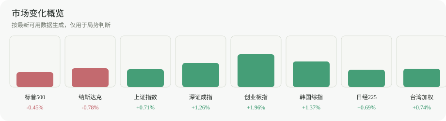

A股局势
中性金融认知知识库
轻量市场看板，只提供局势底色和真实数据入口。它不替代看盘软件，也不直接给出交易结论。
全球参照
偏强
A股
A股 · 2026-07-03
上证指数
+0.37%
4,043.64
A股 · 2026-07-03
深证成指
+0.64%
15,597.51
A股 · 2026-07-03
创业板指
+0.07%
4,019.93
全球参照
美国 · 2026-07-02
标普500
+0.00%
7,483.24
美国 · 2026-07-02
纳斯达克综合指数
-0.80%
25,832.67
韩国 · 2026-07-03
韩国综合指数
+5.76%
8,088.34
日本 · 2026-07-03
日经225
+1.47%
69,744.07
台湾 · 2026-07-03
台湾加权指数
+0.08%
46,780.62
使用边界
这个页面用于辅助判断市场背景：看共振、分化和风险偏好。具体买卖、盘口、分时和技术细节仍交给专业看盘软件。原始数据见 market_prices.json。